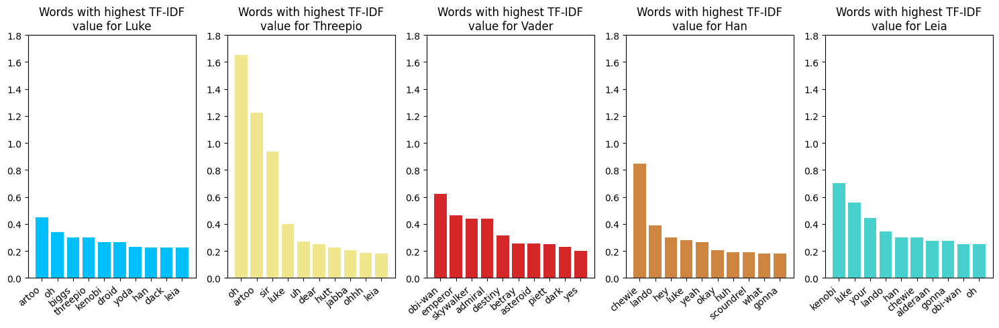

Analyzing Star Wars movie scripts
In this part, we will analyze the movie scripts from Star Wars and the social structures within. To see more information about the dataset using in this section, go to "Behind The Data".
Finding key characters
Before making temporal graphs for the key character, we need to find which characters are key. Ofcource, we do have our assumptions, but to be sure we are right, we will do some analysis. This can be done by analyzing the movie scripts. We make the assumption that the characters with the most dialogues with other characters, are key characters. We can do this for each episode:
Here the 10 characters with the most interactions with others are seen for each episode.
We can determine some key characters that have the most dialogues with other characters as: Luke, C-3PO (Threepio), Vader, Han and Leia.
We will therefore study how their social structure developes throughout these 3 episodes of the movie.
Luke:

| Episode |
Number of relationships |
Procent increase |
| Episode 4: |
43 |
0% |
| Episode 5: |
63 |
46.51% |
| Episode 6: |
78 |
81.40% |
The table on the left shows how Luke's relationsships develop over the 3 episodes (movie 4, 5 and 6). The procent increase is compared to Episode 4.
We will now compare these findings with the other main characters.
The exact same analysis will now follow for each of them:
C-3PO:

| Episode |
Number of relationships |
Procent increase |
| Episode 4: |
27 |
0% |
| Episode 5: |
56 |
107.41% |
| Episode 6: |
74 |
174.07% |
C-3PO also known as 'Threepio' sees a similar pattern as Luke although the procentwise growth is larger. This is mainly due to C-3PO not having conversations with many others that Luke in the first movie. C-3PO has the second most dialogues just under Luke, but the number of relationships is very small.
Vader:

| Episode |
Number of relationships |
Procent increase |
| Episode 4: |
33 |
0% |
| Episode 5: |
55 |
66.67% |
| Episode 6: |
73 |
121.21% |
The growth continues to go up. Vader has more relationships than C-3PO, but less than Luke in the first movie, however we do see an significant increase in relationsships in movie 5 and 6, although he is the main character with the least amount of dialogues. This suggest Vader does not speak and are not as present as the other characters, but when he is, it if often with people he has not been seen in with before.
Han:

| Episode |
Number of relationships |
Procent increase |
| Episode 4: |
16 |
0% |
| Episode 5: |
40 |
150.0% |
| Episode 6: |
57 |
256.25% |
Han has a massive boost in relationships in Episode 5. This is mainly due to him not being as present in the fourth movie, but the third most active in the third movie. The procentwise increase is therefore overly exactered compared to the actual number of relationsships precisely for that reason.
Leia:

| Episode |
Number of relationships |
Procent increase |
| Episode 4: |
14 |
0% |
| Episode 5: |
32 |
128.57% |
| Episode 6: |
51 |
264.29% |
Leia sees the exact same pattern as Han in the fourth movie. She is not as present in the fourth movie as Han, but more present in the fifth movie, and the growth of social relationssips therefore growths more smoothly.
| Character |
Number of final relationships |
Number of dialogues |
| Luke |
72 |
494 |
| C-3PO |
51 |
301 |
| Vader |
63 |
140 |
| Han |
52 |
459 |
| Leia |
47 |
227 |
It seems that all characters end up having the (very close to) same number of connections at the end. We can see that they do not have the same amount of dialogues, which means some people interact more with each other than others (we can imagine Luke and Threepio have a pretty strong connection and a lot of dialogues together.)
The table above proves the analysis made for each of the main characters. Luke is having many conversations with many different people. C-3PO has a bunch of conversation, but that with as many different people. Vader has the least amount of dialogues, but second most relationsships. Leia and Han have least amount of relationsships, but han with double the amount of dialogues. This matches the storyline in the movies. But now the interesting part: What are they actually saying? What are the tone, main word, etc? Let's find out:
Word Analysis:
To see more on how we made this word analysis, see our notebook at "Behind the data".

We can now do the same analysis on each of the episodes: